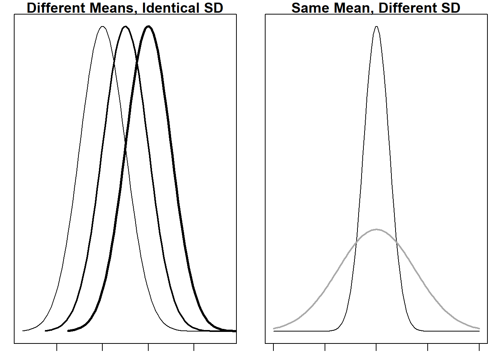
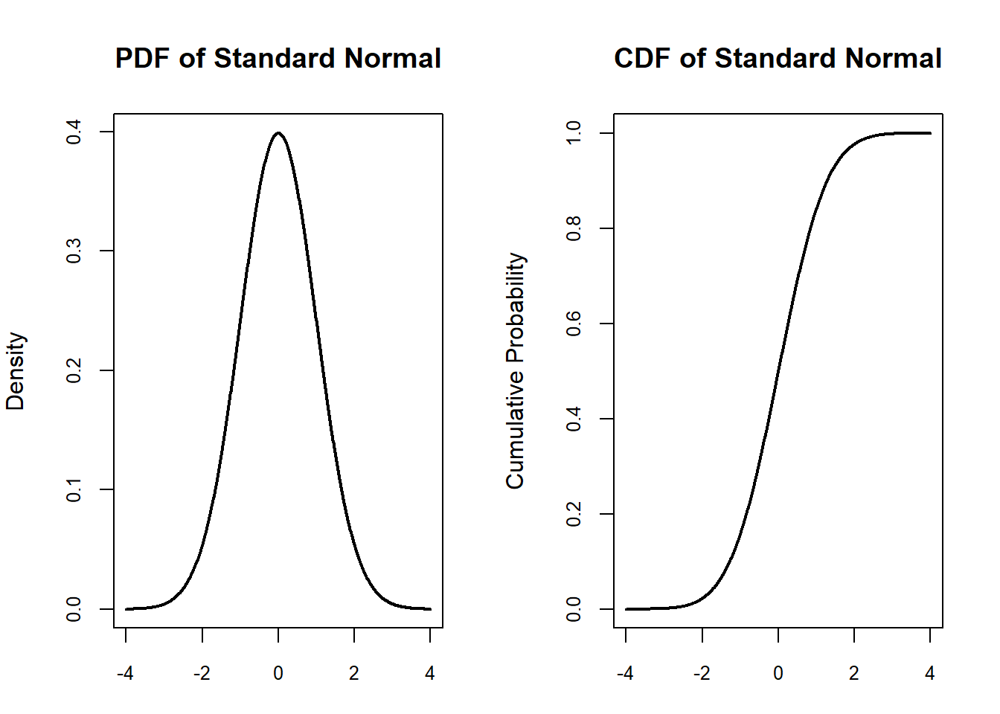
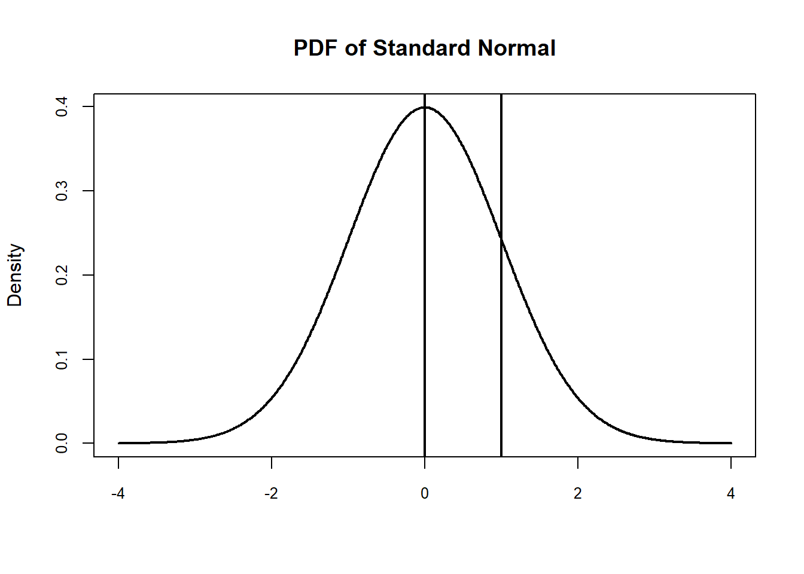
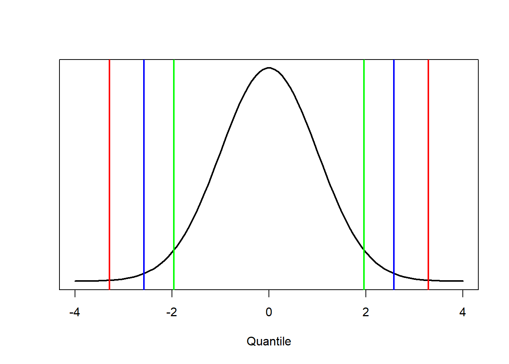
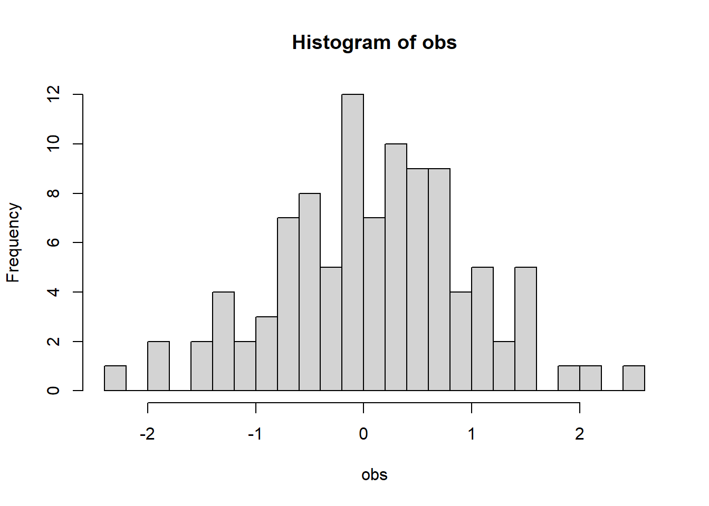
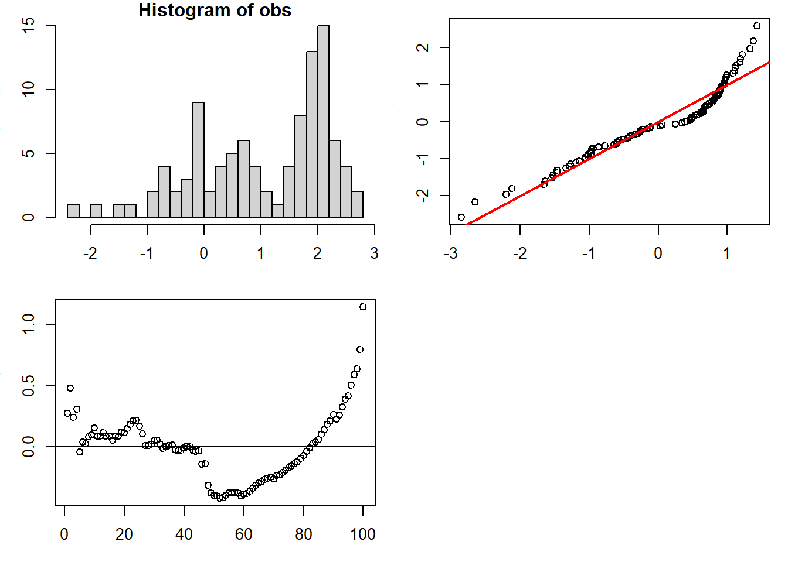

11 The Normal Distribution
- The normal distribution is probably the most common distribution in all of probability and statistics.
11.1 The Normal Probability Density Function
The probability density function for the normal distribution is defined as:
\(y_i = \frac{1}{\sigma\sqrt2\pi}e^{-(X_i-\mu)^2/2\sigma^2}\)
We can think of the model in this way (mathematical approach):
\(f(X) = \frac{1}{\sigma\sqrt2\pi}e^{-(X_i-\mu)^2/2\sigma^2}\)
Where the parameters (the symbols ) represent the mean, \(\mu\) and the standard deviation, \(\sigma\).
- What are some of the general characteristics of this model? Can you describe its shape?
- What are the parameters of the model? These are the quantities we will estimate in the fitting process.
- What are the variables used in the model? These are the observations.

Below, two distributions are plotted from the ‘Standard Normal Distribution’, in this formulation:
\({\sigma=1}\) and \({\mu=0}\).

The normal distribution is an example of a continuous univariate probability distribution with infinite support.
By infinite support, we mean that we can calculate values of the probability density function for all outcomes between \(-\infty\) and \(+\infty\).
For clarification, the density value on the y-axis is not the resulting probability of obtaining the sampled value.
Well, how do we get the probability from a probability density function?
We need to integrate the density function given the value of the parameters.
So from our example distribution with mean = 0 and standard deviation = 1, we can find the probability that an observed value will bebetween 0 and 1 by finding the area shown in the image below.

We can read this as “the integral of the probability density function between 0 and 1 (on the left-hand side) is equal to the probability that the outcome of the random variable is between zero and 1 (on the right-hand side)”.
We can cover all possible values if we evaluate the density from \(-\infty\) to \(+\infty\).
Therefore the following has to be true for the function to be a probability density function:
One last thing here: The probability of the random variable being equal to a specific outcome is 0, because the integral over x values of x to x is equal to zero.
The definition of the definite integral:
\(\int_{a}^{b}f(x)dx = \underset{\rm n \rightarrow\infty}{lim}\sum_{i = 1}^n{f(x_i)\Delta{x}}\),
where \(x_i = a + i\Delta{x}\) and \(\Delta{x} = \frac{b-a}{n}\).
If \(a - b = 0\), then \(\Delta{x} = 0\).
So the integral is zero:
\(\int_{a}^{b}f(x)dx = \underset{\rm n \rightarrow\infty}{lim}\sum_{i = 1}^n{0}\),
\(\underset{\rm n \rightarrow\infty}{lim}\sum_{i = 1}^n{0} = \underset{\rm n \rightarrow\infty}{lim}{0}\),
\(\underset{\rm n \rightarrow\infty}{lim}{0} = 0\).
11.2 Z-scores
Z-scores are a way to center and scale the observations to understand how many standard deviations each value is away from the mean.
Z-score values are measures of the ‘distance’ in standard deviations of a single value.
\(Z_i = \frac{X_i-\mu}{\sigma}\)
- Standardizing a score with respect to the other scores in the group.
- Expresses a score in terms of how many standard deviations it is away from the mean.
- Converts a distribution to a z-score distribution.
- Z-scores have mean = 0 and standard deviation = 1.
11.3 Properties of Z-scores
A Z-scores, measure that quantifies how many standard deviations an observation is away from the mean of a distribution. Because of the scaling and centering we can quickly (and easily) convert any distribution of normally distributed random variables into Z-scores using the standard normal distribution (\(\mu = 0\) and \(\sigma = 1\)).
The quantile value of:
1.96 is the maximum 2.5% of the standard normal distribution.
-1.96 is the minimum 2.5% of the standard normal distribution.
Thus, 95% of z-scores lie between \(-1.96 \le x_i \le 1.96\).
99% of z-scores lie between \(-2.58 \le x_i \le 2.58\).
99.9% of them lie between \(-3.29 \le x_i \le 3.29\).
Let’s look at a Z Table to reinforce our understanding (Table B2 in Zar 4th edition).
11.3.1 R Code
## Provide code in R (using base R functionality) to illustrate and show the calculations for
## the Z-score.## ```R
## # Sample data
## my_data <- c(10, 12, 15, 18, 20)
##
## # Mean and Standard deviation
## my_mean <- mean(my_data) # calculate mean of my_data
## my_sd <- sd(my_data) # calculate standard deviation of my_data
##
## # Calculate the Z-score for each data point
## my_z_scores <- (my_data - my_mean) / my_sd # calculate z-score of each data point
##
## # Print the Z-scores
## print(my_z_scores) # print calculated Z-scores
## ```11.4 Areas under the Normal Curve for different quantile values

11.4.1 R Code
## Provide code in R (using base R functionality) to determine the integral (area under the
## curve) from normal distributions using the function pnorm.## ```R
## # area under the standard normal curve from -Inf to x
## pnorm(x)
##
## # area under the standard normal curve from a to b
## pnorm(b) - pnorm(a)
##
## # To find the area under a normal curve with a given mean 'm' and standard deviation 's', we first standardize the values using 'z = (x - m) / s', then use the 'pnorm()' function:
##
## # area under a normal curve with mean m and std dev s from -Inf to x
## pnorm(x, mean = m, sd = s)
##
## # area under a normal curve with mean m and std dev s from a to b
## pnorm(b, mean = m, sd = s) - pnorm(a, mean = m, sd = s)
## ```
##
## The inline comments provide brief explanations of what each line of code does.11.4.2 R Code
## Provide code in R (using base R functionality) to determine the quantile for a given area
## under the curve from a normal distribution using the qnorm function.## ```R
## area <- 0.95 # Define the desired area under the curve as 0.95
## quantile <- qnorm(area) # Calculate the quantile using qnorm function
## quantile # Print the result
## ```
##
## In this code, we have first defined the desired area under the curve as `0.95`. We have then used the `qnorm()` function to calculate the corresponding quantile value and stored it in the `quantile` variable. Finally, we have printed the result using the `print()` function.
##
## Note that the `qnorm()` function returns the quantile value corresponding to the desired area in a standard normal distribution (i.e., with a mean of 0 and standard deviation of 1). If you want to find the quantile value for a normal distribution with a different mean and/or standard deviation, you can use the `qnorm()` function with appropriate arguments (see the documentation of `qnorm()` for details).11.5 Checking for normality
Because many statistical tests we will be considering in this course are useful only if data are normally distributed we will need a way to assess if this is true.
Are the observations normally distributed?
11.5.2 QQ plot
The QQ plot (Quantile Quantile) plot is a scatter plot that compares two sets of data.
Here we will compare the observations (real-world data) to a theoretical data set that we would expect to see if the data came from a normal distribution with the sample \(\bar{X}\) and \(s\), the reference data.
If the distribution of the data is the same, the result will be a straight line. Each data value of the data is plotted along this reference line using the scale parameter.
So, the question is, do these data come from a population of normally distributed values.

First, rank your data and assign a probability to each value of the original data (empirical probability).
| obs | rank.obs | probability | theoretical.quantiles | observed.quantiles |
|---|---|---|---|---|
| -2.215 | 1 | 0.005 | -2.576 | -2.587 |
| -1.989 | 2 | 0.015 | -2.170 | -2.336 |
| -1.805 | 3 | 0.025 | -1.960 | -2.131 |
| -1.524 | 4 | 0.035 | -1.812 | -1.818 |
| -1.471 | 5 | 0.045 | -1.695 | -1.759 |
| -1.377 | 6 | 0.055 | -1.598 | -1.654 |
We build on the rank order of the data points to calculate the corresponding probabilty values.
\(p = \frac{rank-\frac{1}{2}}{n}\).
We then determine the theoretical quantiles, the theoretical standard normal quantiles for the calculated probability values.
The quantiles from the observed data are Z scores calculated from the observed data \(X_i\), \(\bar{X}\), and \(s\).

Now lets look at the simulated data drawn from a non-normal distribution:
Question, do these data come from a normal distribution?

11.5.3 R Code
## Provide code in R (using base R functionality) to make a quantile-quantile plot to perform
## a qualitative test of nomality from a simulated set of values.## ```R
## # Generate a simulated set of data
## set.seed(123) # Set the seed for reproducibility
## sim_data <- rnorm(1000) # Generate 1000 normally distributed random numbers
##
## # Create a Q-Q plot of the simulated data
## qqnorm(sim_data) # Plot the simulated data on the Q-Q plot
## qqline(sim_data) # Add a reference line to the Q-Q plot
## ```
##
## This code snippet generates a simulated set of data consisting of 1000 normally distributed random numbers using the `rnorm()` function. We set the seed to ensure that the same set of random numbers is generated every time the code is run.
##
## We then create a Q-Q plot of the simulated data using the `qqnorm()` function. The `qqline()` function is used to add a reference line to the plot.
##
## The Q-Q plot allows us to compare the simulated data to a normal distribution; if the points on the plot fall roughly along the reference line, then the simulated data is assumed to be normally distributed.